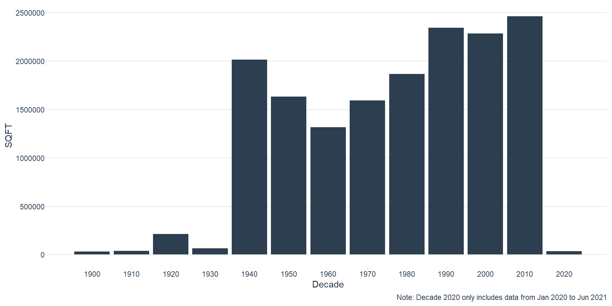

MCCS Facilities Exploratory Analysis
03 July 2021
# File Setup ----
library(tidyverse)
library(ggthemes)
library(ggrepel)
library(extrafont)
library(readxl)
library(DT)
library(gt)
library(DataExplorer)
library(tidyquant)
library(markdown)
library(writexl)
cat_codes <- read_xlsx("/Users/barnesj/OneDrive - USMC-MCCS.ORG/Utilization/iNFADS/Data/MCCS_Facility_ Inventory_Report.XLSX",
sheet = "Cat_code",
col_types = c("numeric", "text", "text", "text")
)
fac <- read_xlsx("/Users/barnesj/OneDrive - USMC-MCCS.ORG/Utilization/iNFADS/Data/MCCS_Facility_ Inventory_Report.XLSX",
sheet = "Facility",
skip = 1,
col_types = c(
"text", "text", "text", "text", "text",
"numeric", "numeric", "date", "text", "date",
"date"
)
)
# infads <- read_rds("/Users/barnesj/OneDrive - USMC-MCCS.ORG/Utilization/iNFADS/Data/infads_clean") # read in the cleaned data
utl <- read_xlsx("/Users/barnesj/OneDrive - USMC-MCCS.ORG/Utilization/iNFADS/Data/MCCS_Facility_ Inventory_Report.XLSX",
sheet = "Sheet1",
skip = 1
)
fac <- fac %>%
janitor::clean_names() %>%
separate(mccs_installation_name, c("num", "installation"), sep = 7) %>%
separate(i_nfads_predominant_current_use_category_code, c("usecode", "usedesc"), sep = 6) %>%
select(
RPUID = i_nfads_real_property_unique_id,
usecode,
usedesc,
installation,
prv = i_nfads_current_prv,
fci = i_nfads_facility_condition_index,
fci_dt = i_nfads_fci_date,
build_dt = i_nfads_facility_built_date
) %>%
# coverting dates to ymd format
mutate(
usecode = usecode %>% as.numeric(),
fci_dt = ymd(fci_dt) %>% replace_na(ymd(0000 / 00 / 00)),
build_dt = ymd(build_dt) %>% replace_na(ymd(0000 / 00 / 00))
) %>%
# adding new column called Q-Rating based on the FCI
mutate(q_rating = case_when(
fci <= 59 ~ "Q4",
fci <= 79 ~ "Q3",
fci <= 89 ~ "Q2",
TRUE ~ "Q1"
)) %>%
# mutate(Category = Category %>% replace_na("Z")) %>%
mutate(installation = case_when(
installation %>% str_to_lower() %>% str_detect("butler") ~ "MCB Butler",
installation %>% str_to_lower() %>% str_detect("mcb camp pendleton") ~ "MCB Pendleton",
installation %>% str_to_lower() %>% str_detect("mcb camp lejeune") ~ "MCB Lejeune",
installation %>% str_to_lower() %>% str_detect("mcb hawaii") ~ "MCB Hawaii",
installation %>% str_to_lower() %>% str_detect("mcas iwakuni") ~ "MCAS Iwakuni",
installation %>% str_to_lower() %>% str_detect("mcas cherry") ~ "MCAS Cherry Point",
installation %>% str_to_lower() %>% str_detect("marine corps base quantico") ~ "MCB Quantico",
installation %>% str_to_lower() %>% str_detect("mcagcc") ~ "MCAGCC 29 Palms",
installation %>% str_to_lower() %>% str_detect("miramar") ~ "MCAS Miramar",
installation %>% str_to_lower() %>% str_detect("yuma") ~ "MCAS Yuma",
installation %>% str_to_lower() %>% str_detect("san diego") ~ "MCRD San Diego",
installation %>% str_to_lower() %>% str_detect("mcrd beaufort") ~ "MCRD PI",
installation %>% str_to_lower() %>% str_detect("new river") ~ "MCAS New River",
installation %>% str_to_lower() %>% str_detect("futenma") ~ "MCAS Futenma",
installation %>% str_to_lower() %>% str_detect("mcas beaufort") ~ "MCAS Beaufort",
installation %>% str_to_lower() %>% str_detect("barstow") ~ "MCLB Barstow",
installation %>% str_to_lower() %>% str_detect("albany") ~ "MCLB Albany",
installation %>% str_to_lower() %>% str_detect("orleans") ~ "MARFORRES",
installation %>% str_to_lower() %>% str_detect("washington") ~ "MBW (8th & I)",
installation %>% str_to_lower() %>% str_detect("garden") ~ "Garden City",
installation %>% str_to_lower() %>% str_detect("bridgeport") ~ "MWTC Bridgeport",
installation %>% str_to_lower() %>% str_detect("mujuk") ~ "Camp Mujuk",
installation %>% str_to_lower() %>% str_detect("mcas camp pendleton") ~ "MCAS Pendleton",
installation %>% str_to_lower() %>% str_detect("allen") ~ "Camp Elmore",
installation %>% str_to_lower() %>% str_detect("mcsf") ~ "MCSF Blount Island",
installation %>% str_to_lower() %>% str_detect("4th mardiv") ~ "HQ 4th MARDIV",
installation %>% str_to_lower() %>% str_detect("mcsptact") ~ "Kansas City"
)) %>%
mutate(RPUID = RPUID %>% as.character()) %>%
mutate(RM = prv * 0.025)
`%notin%` <- Negate(`%in%`)
utl <- utl %>%
janitor::clean_names() %>%
janitor::remove_empty(c("rows"), quiet = TRUE) %>%
select(
RPUID = i_nfads_real_property_unique_id,
use = i_nfads_use_category_code,
fac_num = i_nfads_facility_number,
installation = mccs_installation_name,
program = mccs_business_program,
asset_name = i_nfads_real_property_asset_name,
fac_use = i_nfads_facility_use,
FY2022 = fsm_fy22_sustainment_cost,
Cat = i_nfads_naf_category,
adq = i_nfads_adq_area_measure,
sub = i_nfads_sub_area_measure,
iadq = i_nfads_iadq_area_measure,
adq_alt = i_nfads_adq_alternate_measure,
sub_alt = i_nfads_sub_alternate_measure,
iadq_alt = i_nfads_iadq_alternate_measure,
adq_other = i_nfads_adq_other_measure,
sub_other = i_nfads_sub_other_measure,
iadq_other = i_nfads_iadq_other_measure
) %>%
separate(use, into = c("use_code", "use_desc"), sep = 6) %>%
mutate(use_code = use_code %>% as.numeric()) %>%
# Remove divestments
filter(RPUID %notin% c(
21104, 54390, 25139, 24922, 18187, 21378, 21379, 43713, 43714, 35068, 35073, 35080,
33751, 38891, 38889, 38895, 47139, 40535, 43543, 43544, 43744, 40524, 40529,
40532, 40526, 40534, 47876, 46374, 39594, 54613
)) %>%
mutate(
adq = adq %>% replace_na(0),
sub = sub %>% replace_na(0),
iadq = iadq %>% replace_na(0),
adq_other = adq_other %>% replace_na(0),
sub_other = sub_other %>% replace_na(0),
iadq_other = iadq_other %>% replace_na(0),
adq_alt = adq_alt %>% replace_na(0),
sub_alt = sub_alt %>% replace_na(0),
iadq_alt = iadq_alt %>% replace_na(0),
FY2022 = FY2022 %>% replace_na(0)
) %>%
mutate(total_measure = adq + sub + iadq,
alt_total_measure = adq_alt + sub_alt + iadq_alt,
other_total_measure = adq_other + sub_other + iadq_other) %>%
group_by(RPUID) %>%
mutate(use_pct_area = total_measure / sum(total_measure),
use_pct_other = other_total_measure / sum(other_total_measure),
use_pct_alt = alt_total_measure / sum(alt_total_measure),
use_pct_area = use_pct_area %>% replace_na(0),
use_pct_alt = use_pct_alt %>% replace_na(0),
use_pct_other = use_pct_other %>% replace_na(0)) %>%
mutate(fac_use_pct = if_else(use_pct_area > 0, use_pct_area,
if_else(use_pct_alt > 0, use_pct_alt, use_pct_other))) %>%
ungroup() %>%
mutate(region = case_when(
installation %in% c(
"M00146 MCAS CHERRY POINT NC",
"M00263 MCRD BEAUFORT PI SC",
"M60169 MCAS BEAUFORT SC",
"M62573 MCAS NEW RIVER JAX NC",
"M67001 MCB CAMP LEJEUNE NC",
"M67004 MCLB ALBANY GA",
"M67695 MCSF BLOUNT ISLAND"
) ~ "MCIEAST",
installation %in% c(
"M00264 MARINE CORPS BASE QUANTICO VA",
"M67029 MARBKS WASHINGTON DC"
) ~ "MCINCR",
installation %in% c(
"M00318 MCB HAWAII KANEOHE",
"M20810 CAMP MUJUK REPUBLIC OF KOREA",
"M63026 MCAS FUTENMA JA",
"M67400 MCB CAMP S D BUTLER OKINAWA JA",
"M62613 MCAS IWAKUNI JA"
) ~ "MCIPAC",
installation %in% c(
"M00681 MCB CAMP PENDLETON CA",
"M62204 MCLB BARSTOW CA",
"M62974 MCAS YUMA AZ",
"M67604 MCAS CAMP PENDLETON CA",
"M67865 MCAS MIRAMAR"
) ~ "MCIWEST",
installation %in% c(
"M00243 MARCORPRCUITDEP SAN DIEGO CA",
"M64495 MARCORPSMWTC BRIDGEPORT CA",
"M67399 MCAGCC TWENTYNINE PALMS CA"
) ~ "SLTI",
installation %in% c(
"M09036 CAMP ALLEN",
"M67011 MARCORPS DIST 1 GARDEN CITY NY",
"M67386 MCSPTACT KANSAS CITY MO",
"M67861 MARCORRESFOR NEW ORLEANS LA",
"M68479 HDQTRS 4TH MARDIV NEW ORLEANS"
) ~ "NONE"
)) %>%
mutate(RPUID = RPUID %>% as.character())
fac_mapped <- utl %>%
inner_join(cat_codes, by = c("use_code" = "use_code"))
fac_mapped <- fac_mapped %>%
left_join(fac, by = "RPUID") %>%
filter(naf_cat %in% c("A", "B", "C", "L"))
# RPUID_count <- fac_mapped %>%
# group_by(RPUID) %>%
# count(RPUID)
#
# fac_mapped <- fac_mapped %>%
# inner_join((RPUID_count))
df_clean <- fac_mapped %>%
mutate(
sus = if_else(naf_cat == "C", FY2022 * 2, FY2022),
sus = sus %>% replace_na(0)
) %>%
mutate(
RM_corrected = RM * fac_use_pct)
df_final <- df_clean %>%
select(region, installation = installation.x, RPUID, use_code, use_desc, usedesc, naf_cat, op_activity, fac_num, facility_desc, asset_name, fci, fci_dt, q_rating, build_dt, adq, sub, iadq, total_measure, adq_alt, sub_alt, sub_other, alt_total_measure, adq_other, sub_other, iadq_other, other_total_measure, use_pct_area, use_pct_alt, use_pct_other, fac_use_pct, prv, RM, RM_corrected, sus)
write_xlsx(df_final, path = "/Users/barnesj/OneDrive - USMC-MCCS.ORG/Utilization/iNFADS/Data/df_finalv3.xlsx")Exploring Costs
category <- df_final %>%
group_by(naf_cat) %>%
summarise(
total_sus = sum(sus),
total_rm = sum(RM_corrected),
total = sum(sus) + sum(RM_corrected)
) %>%
arrange(desc(total)) %>%
janitor::adorn_totals()
category## naf_cat total_sus total_rm total
## C 72570986 120040348 192611334
## A 25695011 88802160 114497172
## B 18183573 44002558 62186131
## L 11446488 29944762 41391250
## Total 127896057 282789829 410685886region <- df_final %>%
group_by(region) %>%
summarise(
total_sus = sum(sus),
total_rm = sum(RM_corrected),
total = sum(sus) + sum(RM_corrected)
) %>%
arrange(desc(total)) %>%
janitor::adorn_totals()
region## region total_sus total_rm total
## MCIPAC 49129796.2 107857413 156987209
## MCIEAST 29301336.3 78408898 107710234
## MCIWEST 30908358.3 46197514 77105872
## SLTI 11654129.9 19120407 30774537
## MCINCR 6232067.3 23673522 29905589
## NONE 670369.3 7532075 8202444
## Total 127896057.4 282789829 410685886program <- df_final %>%
group_by(op_activity) %>%
summarise(
total_sus = sum(sus),
total_rm = sum(RM_corrected),
total = sum(sus) + sum(RM_corrected)
) %>%
arrange(desc(total)) %>%
janitor::adorn_totals()
program## op_activity total_sus total_rm total
## Semper Fit Programs 21031441.9 75525342 96556784
## Exchange Operations 31407372.8 39522473 70929846
## Food & Beverage (Direct) 8390116.1 52345280 60735396
## Marine & Family Programs 12400073.9 33274964 45675038
## Clubs 19884399.1 22394064 42278463
## Lodging 11446487.8 29944762 41391250
## Commercial Recreation 16074501.9 13782553 29857055
## Children & Youth Programs 6430689.6 12803731 19234421
## Other Business Operations 830974.4 3196660 4027634
## Total 127896057.4 282789829 410685886Exploring Square Footage
program_decade_sqft <- df_final %>%
mutate(decade = floor_date(build_dt, years(10)) %>% year()) %>%
group_by(decade, op_activity) %>%
summarise(total = sum(total_measure)) %>%
mutate(decade = if_else(is.na(decade), 2020, decade)) %>%
ggplot(aes(decade, total)) +
geom_line() +
# geom_smooth(method = "lm", se = FALSE) +
facet_wrap(~op_activity, scales = "free_y") +
theme_clean() +
scale_y_continuous(labels = scales::number) +
labs(
y = "Total Measure (SqFt)",
x = "Decade",
title = "What is the sqft added in each decade by Program?",
subtitle = "Decade is based on build date"
)
program_decade_sqft
program_year_sqft <- df_final %>%
mutate(year = floor_date(build_dt, years(1)) %>% year()) %>%
group_by(year, op_activity) %>%
filter(year >= 1980, year <= 2020) %>%
summarise(total = sum(total_measure)) %>%
# mutate(decade = if_else(is.na(year), 2020, decade)) %>%
ggplot(aes(year, total)) +
geom_col() +
geom_smooth(method = "lm", se = FALSE) +
facet_wrap(~op_activity, scales = "free") +
theme_tq() +
scale_y_continuous(labels = scales::number) +
# scale_x_continuous(breaks = c(1980, 1985, 1990, 1995, 2000, 2005, 2010, 2015, 2020)) +
labs(
y = "Total Measure (SqFt)",
x = "Year",
title = "What is the sqft added each year by Program?",
subtitle = "Year is based on build date of facility"
)
program_year_sqft
region_year_sqft <- df_final %>%
mutate(year = floor_date(build_dt, years(1)) %>% year()) %>%
group_by(year, region) %>%
filter(year >= 1980, year <= 2020) %>%
summarise(total = sum(total_measure)) %>%
filter(region != "NONE") %>%
# mutate(decade = if_else(is.na(year), 2020, decade)) %>%
ggplot(aes(year, total)) +
geom_col() +
geom_smooth(method = "lm", se = FALSE) +
facet_wrap(~region, scales = "free") +
theme_tq() +
scale_y_continuous(labels = scales::number) +
# scale_x_continuous(breaks = c(1980, 1985, 1990, 1995, 2000, 2005, 2010, 2015, 2020)) +
labs(
y = "Total Measure (SqFt)",
x = "Year",
title = "What is the total measure of sqft by Region in a given year?",
subtitle = "Year is based on build date of facility"
)
region_year_sqft
scale <- seq(1900, 2020, by = 10)
df_final %>%
mutate(decade = floor_date(build_dt, years(10)) %>% year()) %>%
group_by(decade) %>%
summarise(sqft = sum(total_measure)) %>%
mutate(decade = decade %>% as.double(),
decade = if_else(is.na(decade), 2020, decade)) %>%
ungroup() %>%
ggplot(aes(decade, sqft)) +
geom_col(fill = "#2c3e50") +
scale_x_continuous(breaks = scale) +
theme_clean() +
labs(
title = "New Square Footage by Decade",
subtitle = "Based on Facilities Build Date",
y = "SQFT",
x = "Decade"
)
df_final %>%
mutate(decade = floor_date(build_dt, years(10)) %>% year()) %>%
group_by(decade) %>%
summarise(sqft = sum(total_measure)) %>%
ungroup() %>%
mutate(decade = decade %>% as.double(),
decade = if_else(is.na(decade), 2020, decade),
cumulative = cumsum(sqft)
) %>%
ggplot(aes(decade, cumulative)) +
geom_area(fill = "#2c3e50") +
scale_x_continuous(breaks = scale) +
scale_y_continuous(labels = scales::number_format()) +
theme_clean() +
labs(
title = "Cumulative New Square Footage",
subtitle = "Based on Facilities Build Date",
y = "SQFT",
x = "Decade"
)total_sq_by_region <- df_final %>%
group_by(region) %>%
summarise(total_sqft = sum(total_measure)) %>%
arrange(desc(total_sqft)) %>%
mutate(region = region %>% fct_reorder(total_sqft)) %>%
ggplot(aes(region, total_sqft)) +
geom_col(fill = "#2c3e50") +
coord_flip() +
theme_clean() +
scale_y_continuous(labels = scales::number) +
labs(
title = "Total Square Footage by Region",
y = "Total SqFt",
x = "Region"
)
total_sq_by_regiontotal_sq_by_installation <- df_final %>%
group_by(installation) %>%
summarise(total_sqft = sum(total_measure)) %>%
arrange(desc(total_sqft)) %>%
mutate(installation = installation %>% fct_reorder(total_sqft)) %>%
ggplot(aes(installation, total_sqft)) +
geom_col(fill = "#2c3e50") +
coord_flip() +
theme_clean() +
labs(
title = "Total Square Footage by Installation",
y = "Total SQFT",
x = "Installation"
)
# %>%
# gt() %>%
# tab_header(title = "Total Sqaure Foot by Instllation") %>%
# fmt_number(columns = 2 ,
# decimals = 0,
# sep_mark = ",",
# use_seps = TRUE)
total_sq_by_installation
Exploring Q-Rating
q_group <- df_final %>% distinct(RPUID, .keep_all = TRUE)
op_activity_q <- q_group %>%
group_by(op_activity) %>%
count(q_rating) %>%
mutate(q_rating_pct = n / sum(n))
op_activity_q## # A tibble: 36 x 4
## # Groups: op_activity [9]
## op_activity q_rating n q_rating_pct
## <chr> <chr> <int> <dbl>
## 1 Children & Youth Programs Q1 135 0.572
## 2 Children & Youth Programs Q2 83 0.352
## 3 Children & Youth Programs Q3 15 0.0636
## 4 Children & Youth Programs Q4 3 0.0127
## 5 Clubs Q1 14 0.230
## 6 Clubs Q2 23 0.377
## 7 Clubs Q3 22 0.361
## 8 Clubs Q4 2 0.0328
## 9 Commercial Recreation Q1 169 0.357
## 10 Commercial Recreation Q2 218 0.461
## # ... with 26 more rowscat_q <- q_group %>%
group_by(naf_cat) %>%
count(q_rating) %>%
mutate(q_rating_pct = n / sum(n))
cat_q## # A tibble: 16 x 4
## # Groups: naf_cat [4]
## naf_cat q_rating n q_rating_pct
## <chr> <chr> <int> <dbl>
## 1 A Q1 468 0.506
## 2 A Q2 304 0.329
## 3 A Q3 130 0.141
## 4 A Q4 23 0.0249
## 5 B Q1 662 0.525
## 6 B Q2 417 0.330
## 7 B Q3 154 0.122
## 8 B Q4 29 0.0230
## 9 C Q1 351 0.405
## 10 C Q2 353 0.407
## 11 C Q3 136 0.157
## 12 C Q4 27 0.0311
## 13 L Q1 17 0.198
## 14 L Q2 52 0.605
## 15 L Q3 16 0.186
## 16 L Q4 1 0.0116region_q <- q_group %>%
group_by(region) %>%
count(q_rating) %>%
mutate(q_rating_pct = n / sum(n))
# %>%
# gt() %>%
# tab_header(title = "Exploring Q-Rating by Region") %>%
# cols_align(align = c("center"))
region_q## # A tibble: 24 x 4
## # Groups: region [6]
## region q_rating n q_rating_pct
## <chr> <chr> <int> <dbl>
## 1 MCIEAST Q1 531 0.464
## 2 MCIEAST Q2 423 0.369
## 3 MCIEAST Q3 160 0.140
## 4 MCIEAST Q4 31 0.0271
## 5 MCINCR Q1 36 0.321
## 6 MCINCR Q2 40 0.357
## 7 MCINCR Q3 34 0.304
## 8 MCINCR Q4 2 0.0179
## 9 MCIPAC Q1 246 0.402
## 10 MCIPAC Q2 248 0.405
## # ... with 14 more rowsinstallation_q <- q_group %>%
group_by(installation) %>%
count(q_rating) %>%
mutate(q_rating_pct = n / sum(n))
# %>%
# gt() %>%
# tab_header(title = "Exploring Q-Rating by Installation") %>%
# cols_align(align = c("center"))
installation_q## # A tibble: 85 x 4
## # Groups: installation [27]
## installation q_rating n q_rating_pct
## <chr> <chr> <int> <dbl>
## 1 M00146 MCAS CHERRY POINT NC Q1 67 0.475
## 2 M00146 MCAS CHERRY POINT NC Q2 48 0.340
## 3 M00146 MCAS CHERRY POINT NC Q3 23 0.163
## 4 M00146 MCAS CHERRY POINT NC Q4 3 0.0213
## 5 M00243 MARCORPRCUITDEP SAN DIEGO CA Q1 12 0.2
## 6 M00243 MARCORPRCUITDEP SAN DIEGO CA Q2 30 0.5
## 7 M00243 MARCORPRCUITDEP SAN DIEGO CA Q3 18 0.3
## 8 M00263 MCRD BEAUFORT PI SC Q1 27 0.257
## 9 M00263 MCRD BEAUFORT PI SC Q2 54 0.514
## 10 M00263 MCRD BEAUFORT PI SC Q3 19 0.181
## # ... with 75 more rowsExploring the age of facilities
age_q <- df_final %>%
mutate(age = today() - build_dt,
age = round(age/365,0),
age = age %>% as.numeric()) %>%
filter(!is.na(build_dt)) %>%
group_by(q_rating) %>%
summarise(avg_age = round(mean(age),0),
median_age = round(median(age),0),
sd_age = round(sd(age),0),
max_age = max(age),
min_age = min(age),
range_age = max_age - min_age)
# %>%
# gt() %>%
# tab_header(title = "Exlploring Facility Age by Q-Rating") %>%
# cols_align(align = c("center"))
age_q## # A tibble: 4 x 7
## q_rating avg_age median_age sd_age max_age min_age range_age
## <chr> <dbl> <dbl> <dbl> <dbl> <dbl> <dbl>
## 1 Q1 16 11 11 80 3 77
## 2 Q2 42 40 21 121 3 118
## 3 Q3 58 60 19 103 3 100
## 4 Q4 57 61 21 103 10 93df_final %>%
mutate(age = today() - build_dt,
age = round(age/365,0),
age = age %>% as.numeric()) %>%
filter(!is.na(build_dt)) %>%
mutate(q_rating = q_rating %>% fct_reorder(age)) %>%
ggplot(aes(age, q_rating)) +
geom_boxplot() +
theme_clean() +
scale_x_reverse() +
labs(title = "Facility Age by Q-Rating",
x = "Age",
y = "Q-Rating")
program_age <- df_final %>%
mutate(age = today() - build_dt,
age = round(age/365,0),
age = age %>% as.numeric()) %>%
filter(!is.na(build_dt)) %>%
group_by(op_activity) %>%
summarise(avg_age = round(mean(age),0),
median_age = round(median(age),0),
sd_age = round(sd(age),0),
max_age = max(age),
min_age = min(age),
range_age = max_age - min_age)
# %>%
# gt() %>%
# tab_header(title = "Exlploring Facility Age by Program") %>%
# cols_align(align = c("center"))
program_age## # A tibble: 9 x 7
## op_activity avg_age median_age sd_age max_age min_age range_age
## <chr> <dbl> <dbl> <dbl> <dbl> <dbl> <dbl>
## 1 Children & Youth Programs 21 14 18 90 3 87
## 2 Clubs 51 55 25 113 3 110
## 3 Commercial Recreation 33 24 22 101 3 98
## 4 Exchange Operations 34 26 25 103 3 100
## 5 Food & Beverage (Direct) 37 34 23 100 3 97
## 6 Lodging 47 47 24 113 5 108
## 7 Marine & Family Programs 30 23 22 121 3 118
## 8 Other Business Operations 37 30 25 79 3 76
## 9 Semper Fit Programs 34 29 24 103 3 100df_final %>%
mutate(age = today() - build_dt,
age = round(age/365,0),
age = age %>% as.numeric()) %>%
filter(!is.na(build_dt)) %>%
mutate(op_activity = op_activity %>% fct_reorder(age)) %>%
ggplot(aes(age, op_activity)) +
geom_boxplot() +
theme_clean() +
scale_x_reverse() +
labs(title = "Facility Age by Program",
x = "Age",
y = "Program")region_age <- df_final %>%
mutate(age = today() - build_dt,
age = round(age/365,0),
age = age %>% as.numeric()) %>%
filter(!is.na(build_dt)) %>%
group_by(region) %>%
summarise(avg_age = round(mean(age),0),
median_age = round(median(age),0),
sd_age = round(sd(age),0),
max_age = max(age),
min_age = min(age),
range_age = max_age - min_age)
# %>%
# gt() %>%
# tab_header(title = "Exlploring Facility Age by Region") %>%
# cols_align(align = c("center"))
region_age## # A tibble: 6 x 7
## region avg_age median_age sd_age max_age min_age range_age
## <chr> <dbl> <dbl> <dbl> <dbl> <dbl> <dbl>
## 1 MCIEAST 33 24 24 121 3 118
## 2 MCINCR 44 42 28 113 6 107
## 3 MCIPAC 35 31 23 81 3 78
## 4 MCIWEST 28 22 21 79 3 76
## 5 NONE 38 37 28 98 3 95
## 6 SLTI 40 33 28 100 5 95df_final %>%
mutate(age = today() - build_dt,
age = round(age/365,0),
age = age %>% as.numeric()) %>%
filter(!is.na(build_dt)) %>%
mutate(region = region %>% fct_reorder(age)) %>%
ggplot(aes(age, region)) +
geom_boxplot() +
theme_clean() +
scale_x_reverse() +
labs(title = "Facility Age by Region",
x = "Age",
y = "Region")
installation_age <- df_final %>%
mutate(age = today() - build_dt,
age = round(age/365,0),
age = age %>% as.numeric()) %>%
filter(!is.na(build_dt)) %>%
group_by(installation) %>%
summarise(avg_age = round(mean(age),0),
median_age = round(median(age),0),
sd_age = round(sd(age),0),
max_age = max(age),
min_age = min(age),
range_age = max_age - min_age)
# %>%
# gt() %>%
# tab_header(title = "Exlploring Facility Age by Installation") %>%
# cols_align(align = c("center"))
installation_age## # A tibble: 27 x 7
## installation avg_age median_age sd_age max_age min_age range_age
## <chr> <dbl> <dbl> <dbl> <dbl> <dbl> <dbl>
## 1 M00146 MCAS CHERRY POINT~ 39 34 24 79 5 74
## 2 M00243 MARCORPRCUITDEP S~ 59 70 33 100 5 95
## 3 M00263 MCRD BEAUFORT PI ~ 43 42 28 121 3 118
## 4 M00264 MARINE CORPS BASE~ 45 42 27 103 6 97
## 5 M00318 MCB HAWAII KANEOHE 48 47 24 80 6 74
## 6 M00681 MCB CAMP PENDLETO~ 27 19 20 79 4 75
## 7 M09036 CAMP ALLEN 37 37 18 76 12 64
## 8 M20810 CAMP MUJUK REPUBL~ 16 17 2 17 11 6
## 9 M60169 MCAS BEAUFORT SC 31 25 20 78 4 74
## 10 M62204 MCLB BARSTOW CA 35 26 21 79 6 73
## # ... with 17 more rowsdf_final %>%
mutate(age = today() - build_dt,
age = round(age/365,0),
age = age %>% as.numeric()) %>%
filter(!is.na(build_dt)) %>%
mutate(installation = installation %>% fct_reorder(age)) %>%
ggplot(aes(age, installation)) +
geom_boxplot() +
theme_clean() +
scale_x_reverse() +
labs(title = "Facility Age by Installation",
x = "Age",
y = "Installation")